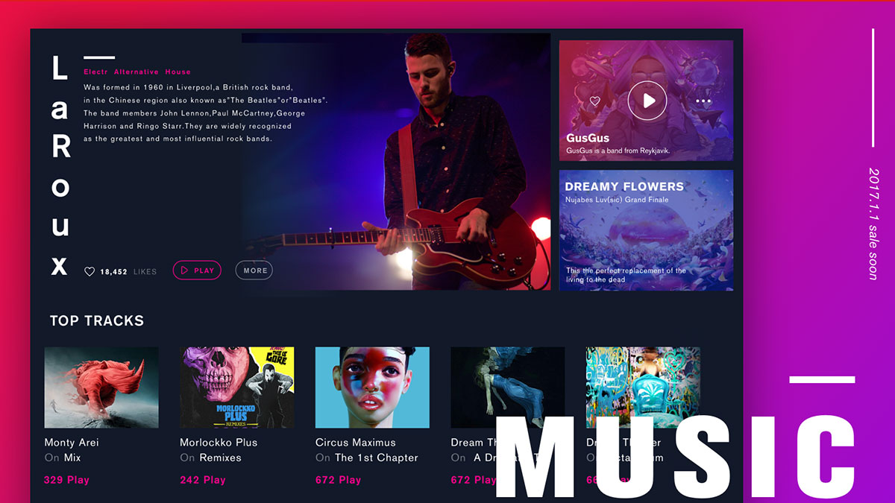
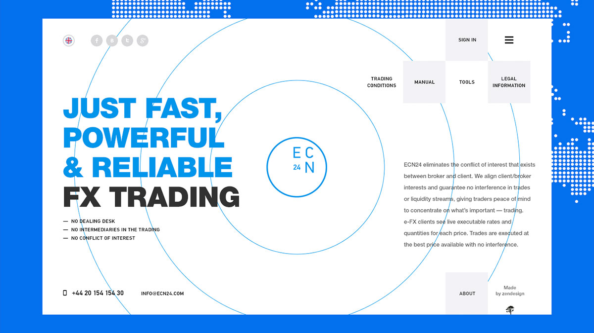

如今网速越来越快，加载速度的提升让图片的地位变得越来越重要。 一张有吸引力的图片可以快速抓住用户的注意力，使其在高端企业站停留的时间更久
使用颜色的一种方法来做一个声明，是一个设计，采用了彩色覆盖。这意味着你覆盖一个图像或视频与一个半透明的彩色盒子。效果可以添加意义的图像，提请注意一个设计，并帮助你做出最有限的艺术选择。
今天，我们来看看各种颜色的叠加，作为创建你自己的一点启示

一个坚实的颜色覆盖可以是同样引人注目的一个渐变图案，但往往有更多的一个独特的意义，可以与颜色选择。考虑一个棕褐色的叠加，例如。它立即激起了旧时代和历史的情感。
同样可以说是选择一个时髦的颜色选择。通过使用一个明亮的，饱和的颜色与平面或材料设计，你可以唤起现代主义或高时尚的感觉。
当使用一个单一的颜色作为叠加时，考虑颜色的饱和度和透明度的程度。这些元素也可以添加意义。较重的颜色组合，不太透明和更多的饱和度，把更多的焦点放在颜色本身比它背后的图像。更轻，更微妙
的组合，把更多的重点放在形象

虽然前面的例子已经显示了如何使用一个大的图像的颜色覆盖，如英雄标题样式选项，这不是唯一的方法，使大多数这种技术。颜色覆盖的效果也可以很好的口音，太。
上述两个例子显示了不同的方式来有效地完成这一。
结衣（顶）使用一个明亮的绿色导航栏与透明度。它的进一步突出了坚实的中风高于它。的影响有助于整个设计保持品牌的调色板同时展示项目中的各种其他颜色。效果很简单，有助于页面看起来有点软，如果
导航是在一个坚实的颜色，并吸引了眼睛向下的页面，并通过设计。
坚果和Woods采取另一种方法。该设计使用一个颜色覆盖作为悬停效果告诉你更多关于网站上的特定项目。任何元素，有一个红色的覆盖也可点击的元素。这个设计值得注意的是，颜色覆盖作为一个视觉提示
用户，告诉他们正是他们想知道的，并提供一个链接整个内容的路径。
使用颜色覆盖是那些不工作的技术之一。大多数的设计师发现他们可以摆脱它的一个或两个项目之前似乎过头了。（这是一个口音覆盖可能是一个更好的选择。）与任何设计技术一样，一定要将其应用在正确的
上下文中。你不应该使用一个颜色覆盖只是因为你已经受到了另一个项目的灵感，保存的想法，并使用它只是正确的设计